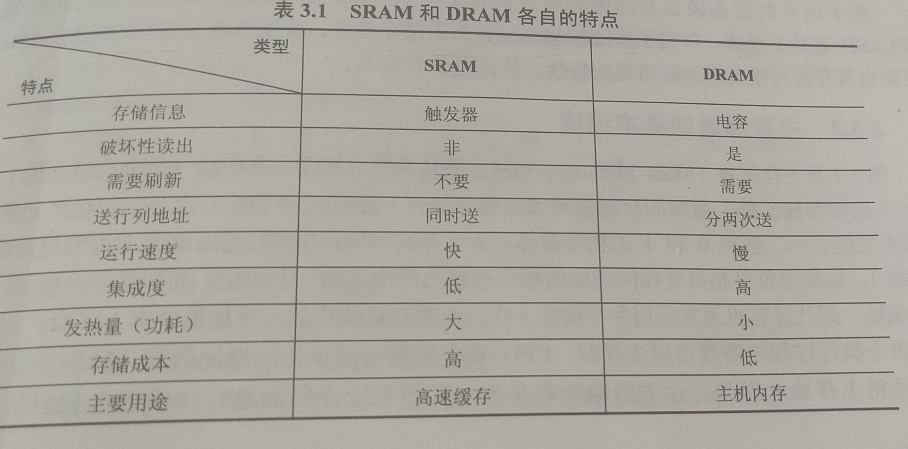
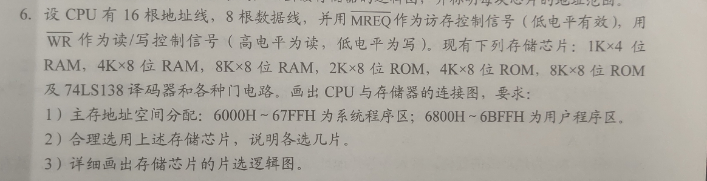
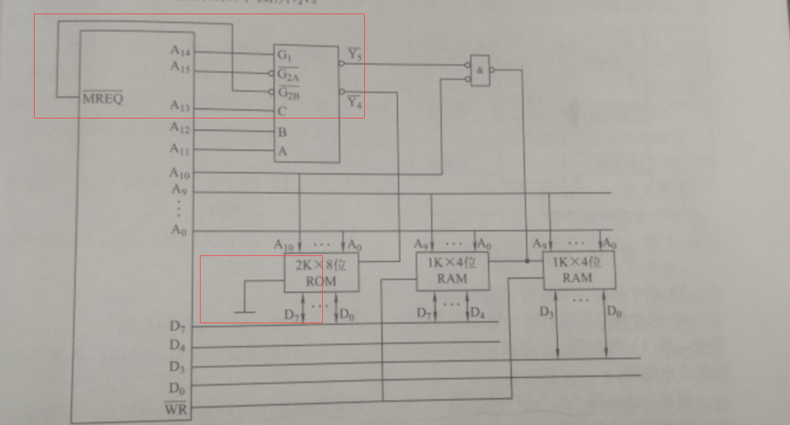
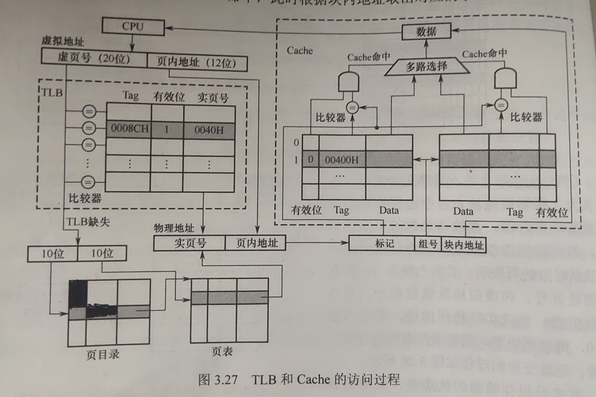
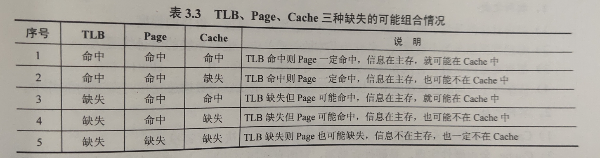
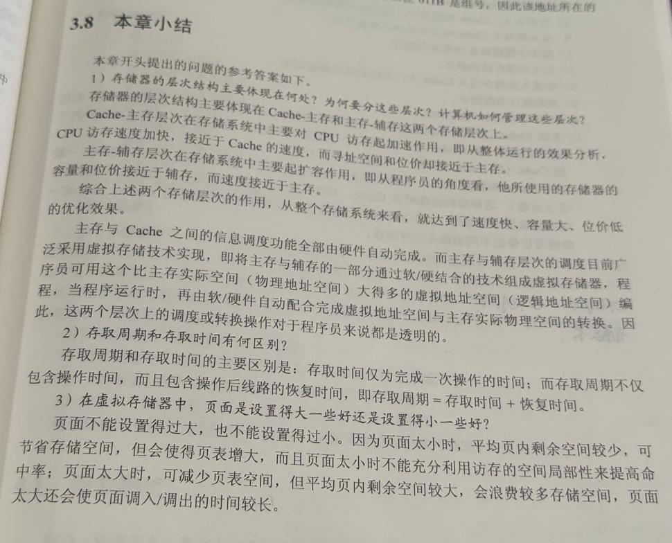

# 存储器概述
主存，辅存，高速缓冲存储器
RAM
ROM
SAM (顺序存取，磁带)
DAM (直接存取，磁盘，光盘)
存储容量：存储字数 × 字长（如 1M×8 位）
单位成本：每位价格 = 总成本 / 总容量。
存储速度：数据传输率 = 数据的宽度 / 存储周期
数据的传输率： 1 秒 主存 进出的数据的最大的数量
①存取时间（Ta）：存取时间是指从启动一次存储器操作到完成该操作所经历
的时间，分为读出时间和写入时间。
②存取周期（Tm）：存取周期又称为读写周期或访问周期。它是指存储器进行一次完整的读写操作所需的全部时间，即连续两次独立地访问存储器操作（读或写操作）之间所需的最小时间间隔。
存取周期 = 存取时间 + 回复时间
③主存带宽（Bm）：主存带宽又称数据传输率，表示每秒从主存进出信息的最大数量，单位为字 / 秒、字节 / 秒（B/s）或位 / 秒（b/s）
# 半导体随机存储器
SRAM
DRAM： 地址复用技术 电容上的电荷一般只能维持 1-2ms 通常取 2ms 为刷新周期
集中刷新 ： 有 “死时间”
分散刷新 ：无” 死时间 “ 存取周期增长
异步刷新 ：有短 “死时间 "

芯片接口数 = 地址线 + 数据线 + 片选线 (DRAM 有行，列片选线)+ 读写控制线 (1-2 根)
# 只读存储器
MROM
PROM
EPROM
Flash Memory (写速度比读速度慢)
SSD
# 主存储器与 cup 的连接
线选法 ：不需要译码器，线路简单 容易造成地址资源浪费
片选法
片选线的连接 cpu 的访存控制信号 MREQ 为低时可访问


# 双端口 RAM 和多模块存储器
双端口 RAM ： 置” 忙 “信号 BUSY 为 0，由判断逻辑决定暂时关闭一个端口
单体多字存储器 ： 每个存储单元存储 m 个字，总线宽度为 m 字
多模块存储器 ：
高位交叉编制 ： 不符合程序运行的局部性原理
低位交叉编址 ： 存储交叉模块数应 m>=T/r 连续存取 m 个字需要的时间 t=T+(m-1) r
双通道：2 体低位交叉存储器
# 高速缓冲存储器
Cache ：SRAM
存取数据有两种方式 1. 先 Cache 后主存 2. 两者同时访问
注意题目
# Cache 和主存的映射方式
1. 直接映射
2. 全连接映射
3. 组相联映射
一位有效位
# Cache 中贮存块的替换算法
直接映射不用替换算法
1. 随机算法
2. 先进先出算法 default
3.LRU（近期最少使用算法）（考研经常考）
与组相联映射一起：有 2^n 路时，就有 n 位替换算法控制位
计数器的变化规则：
1. 命中时，命中行计数器清零，所有比其低的计数器 + 1
2. 未命中时，且有空行............
3. 为命中，且无空行时，计数值为 n 的淘汰，其他全 + 1，新加入的置 0
当集中访问的存储区超过 Cache 块的大小时，会使命中率变的很低，产生抖动
4. 不经常使用算法
将一段时间内访问次数最少的换出，也设置计数器
# Cache 写策略
Cache 命中时
1. 全写法 保证了数据的实时性准确性 耗时，降低 cpu 效率
2. 写回法（设置一位脏位）
Cache 未命中时
1. 写分配法 加载主存块到 Cache 中（通常和写回法配合）
2. 非写分配法（通常和全写法配合）
映射表应该不算在 Cache 的容量中
a=a+n; 注意 a 被访问了两次
# 虚拟存储器
# 页式虚拟存储器
页表基地址
TLB（快表）: 存放在高速缓冲存储器中


缺点：容易造成浪费，不是逻辑上独立的实体，处理，保护，共享不及段式虚拟存储器。
# 段式虚拟存储器
优点：具有逻辑独立性，便于编译，管理，修改和保护，以及多道程序的共享
# 段页式虚拟存储器
缺点：两次查表，系统开销大
Cache 全由硬件实现，是硬件存储器，对所有程序员透明。
虚拟存储器由 OS 和硬件共同实现，是逻辑上的存储器，对系统程序员不透明，但对应用程序员透明
